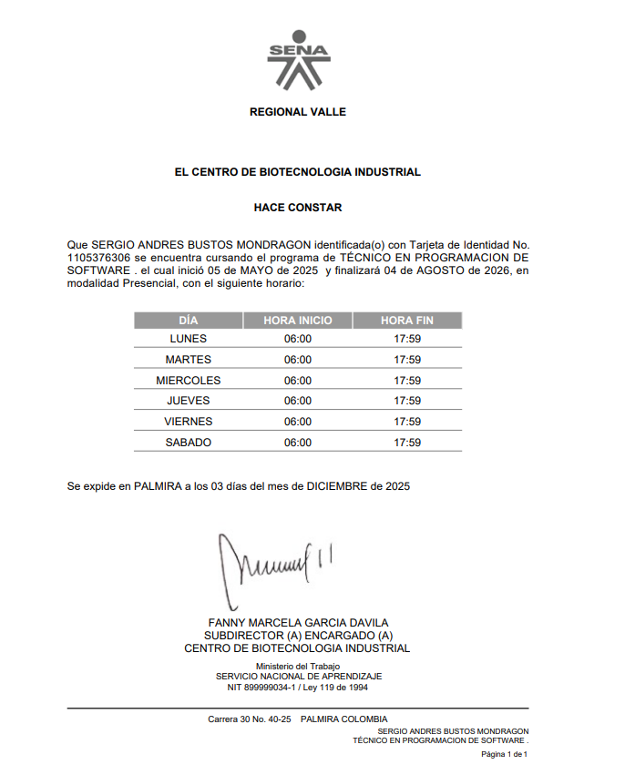

Este certificado acredita que completé y aprobé el Tecnico
Programacion de Software.
Donde fortalecí mis bases
en el pensamiento lógico, análisis de problemas y diseño de soluciones reales
utilizando los principios fundamentales del desarollo web,comprension basica de APIS,comprension solida de
bases de datos, lenguajes de programacion back end,lenguajes front end,controladores de versiones,frameworks, y herramientas externas,etc
Este Tecnico fue quien empezo mi amor por el desarollo web con Python / Flask,aprendi muchas cosas no solo teoricas,
aprendi tambien enseñanzas morales en el mundo del desarollo,entre muchas mas cosas...
Durante la formación desarrollé areas competentes principales como:
Y otras areas competentes secundarias como:
Y herramientas como:
Este Tecnico reforzó mi disciplina, mi mentalidad de desarrollador y me dio una base más fuerte para avanzar hacia proyectos más complejos tanto en backend como en frontend.